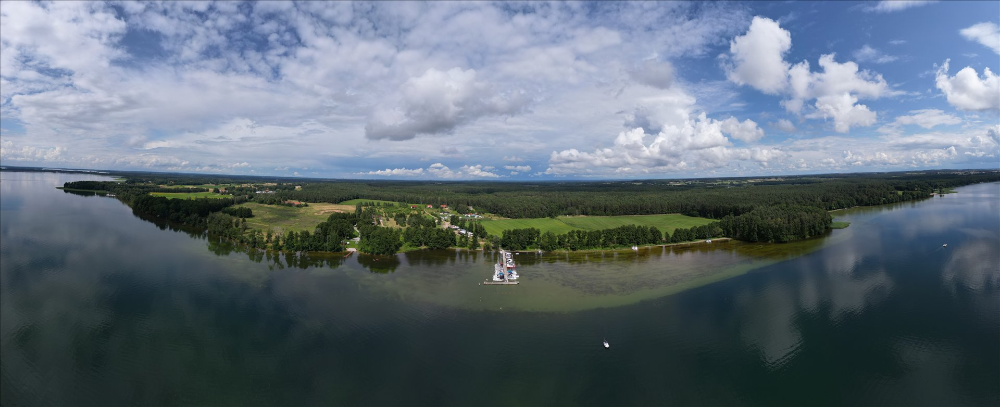
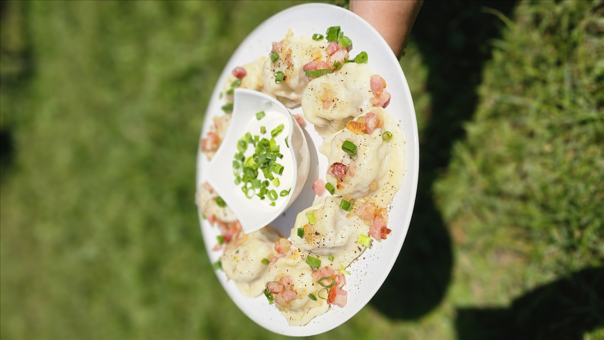
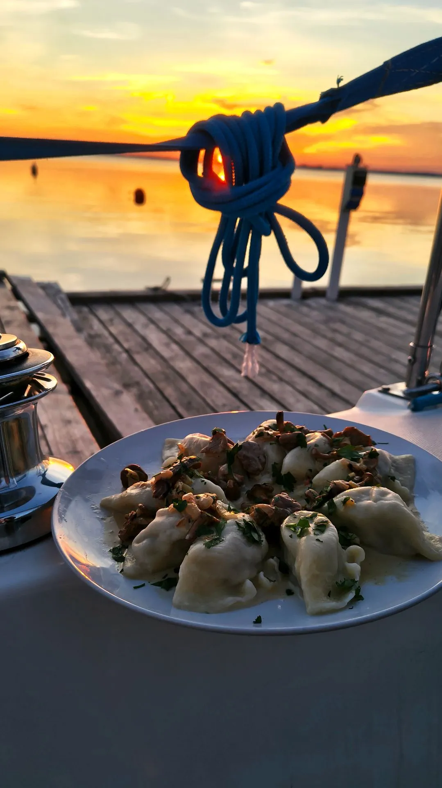
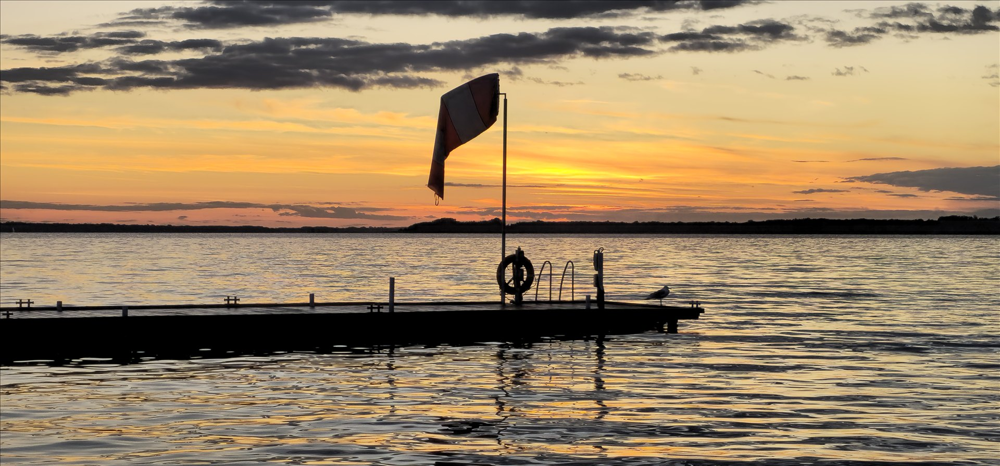

Tawerna
Jedzenie przygotowywane na miejscu. Pierogi, obiad i chwila przy stole.
Tawerna, port i kemping nad Darginem. A teraz również kawałek tego miejsca u Ciebie.

NOWY HARSZ · DARGIN · MAZURY
Mamy port, tawernę i kemping. Przy kei cumują łódki, na lądzie zatrzymują się kampery, a w domkach można zostać także poza sezonem letnim. Jezioro jest blisko. Do stołu też niedaleko.
Tutaj gotujemy dla gości, którzy przyjechali na urlop, i dla tych, którzy zaglądają na obiad. Z tej kuchni wyrósł pomysł na sklep — żeby do znanych smaków dało się wrócić również w domu.

Sandacz z sosem cebulowym. Kaczka z osobno podanym sosem kurkowym. Miętus, szczupak i znajome klasyki: ruskie, z mięsem, z kapustą i grzybami oraz z twarogiem na słodko.
Obok pierogów znajdziesz uszka, pasztet i smalec. Wybierz coś na obiad albo zapas do pieczywa. Jedna porcja naszych pierogów to dziewięć sztuk.

Gdy do kolejnego wyjazdu jeszcze daleko, możesz zamówić nasze jedzenie do domu. Produkty spożywcze pakujemy w opakowania termiczne z wkładem chłodzącym. Wysyłamy na terenie Polski.
A kiedy zatęsknisz za samym miejscem, przyjedź nad Dargin. Zadzwoń przed wizytą, żeby ustalić szczegóły pobytu.
Jedzenie przygotowywane na miejscu. Pierogi, obiad i chwila przy stole.
Przystań nad Darginem. Dla tych, którzy do Harszu trafiają od strony wody.
Kemping i całoroczne domki. O termin i szczegóły pobytu zapytaj nas bezpośrednio.